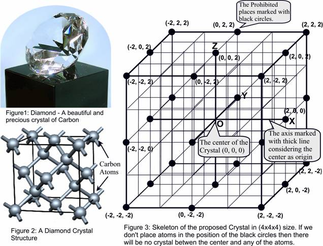

Problem C
Make a Crystal
Input: Standard Input
Output: Standard
Output
A scientist is trying hard to make a very large crystal, a large
crystal of Carbon to be specific. He believes, as Diamond is a crystal of
Carbon and very precious, so his new crystal of carbon would be as precious as
Diamond in the long run. The atoms in his crystal will not hold together
naturally, so he wants to put a strong force at the center of the crystal,
which will attract all the carbon atoms and keep them together.

The Carbon atoms in a diamond crystal can be considered to be placed in
a cube (Shown in Figure
2). The scientist also
wants to place the carbon atoms of his crystal in an (N x N x N) cube, where N is an even number. If the center of this
cube is (0,0,0) and all the sides of this cube are parallel to xy, yz or xz plane
then all the atoms will be placed in three-dimensional integer coordinates. So
if (x, y, z) is the
coordinate of an atom placed in an (N*N*N) cube then x, y, and z are integers and (-N/2<=x, y,
z<=N/2). As
the strong force at the center will attract all the atoms so the atoms are
placed in such a way so that no atom is between the center and another atom.
For example if there is an atom at coordinate (2, 2, 2) then no atoms should be placed in
coordinate (1, 1, 1) as
then the atom at (1, 1, 1)
will block the attractive force between (2, 2, 2) and the center. Similarly if there is an
atom at place (1, 1, 1) then there should be no atom in location (2,
2, 2). Figure 3 shows such an arrangement for (4x4x4) cube: if atoms are placed in all integer
coordinates (the value of x, y and z are integers) except those marked with
black circles, no atom will be between the center and another atom. Given the
size of the cube (length of one side) in which atoms are to be placed to make
the crystal, your job is to find out the maximum number of atoms that can be
placed following the constraints mentioned above
The input file contains at most 30 lines of inputs. Each line contains an even integer N (0<N<=200000), which indicates the length of one side of the cube in which the scientist plans to put his atoms. Input is terminated by a line where the value of N is zero.
For each line of input except the last one produce one line of output. This line should contain the serial of output followed by an integer, which denotes the maximum number of atoms that can be placed.
420 |
Crystal 1: 98Crystal
2: 26 |
Problem setter: Shahriar Manzoor, EPS
Special Thanks: Derek Kisman, EPS
/* It is probably one of my most
favorite problems, of all the problems that I have ever set. It is very much possible
that many papers or research works exist on the idea of this problem. But as a
problem setter I am not aware of those papers. Me and Kisman took two different approaches to solve this problem.
Unfortunately, his method was more elegant and faster. */